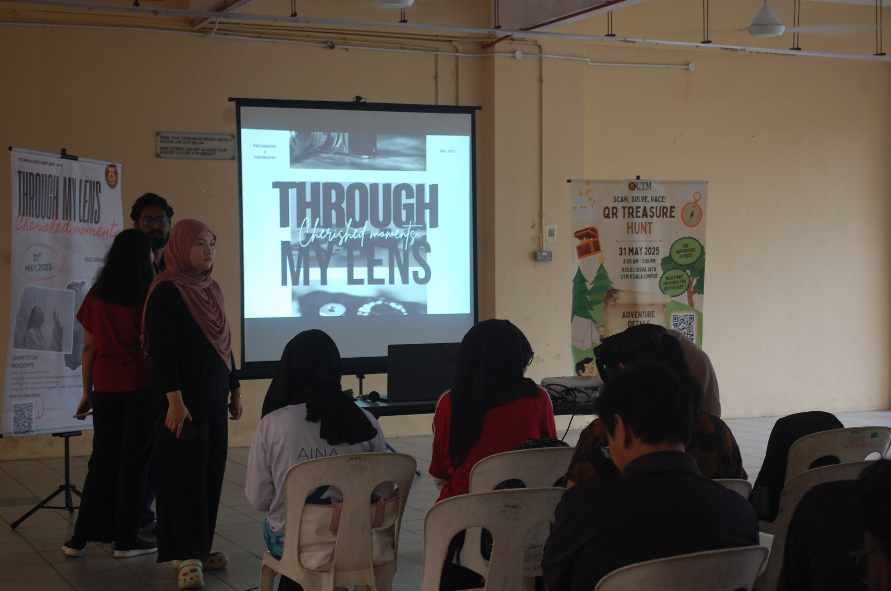
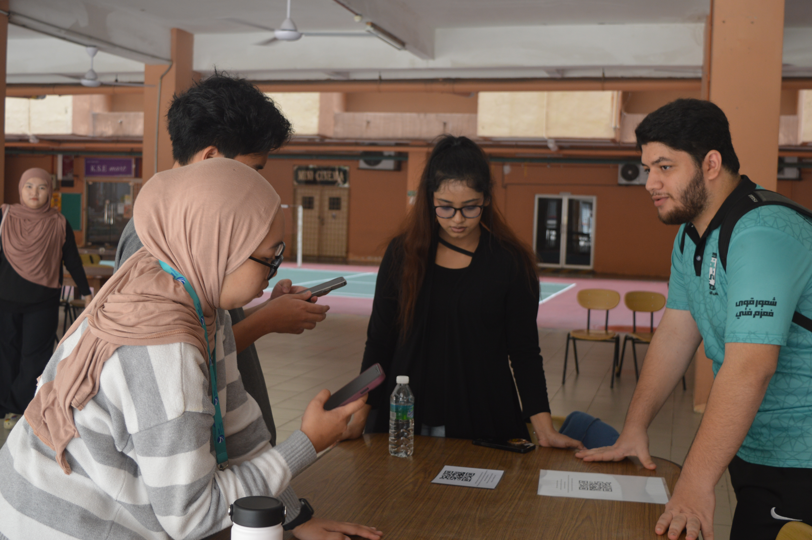
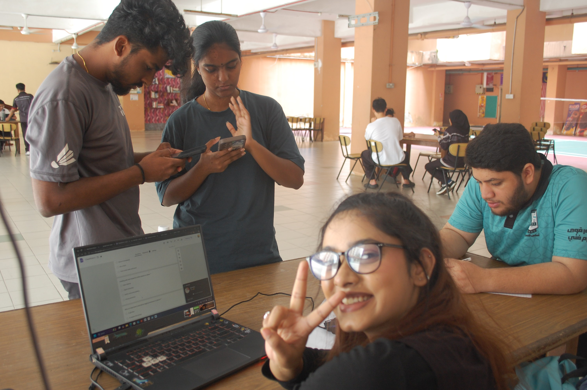
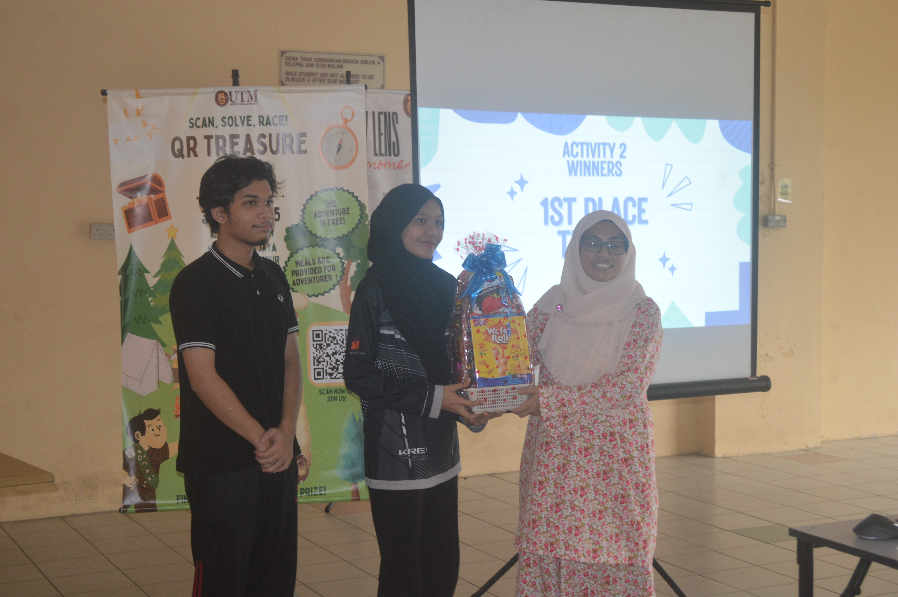
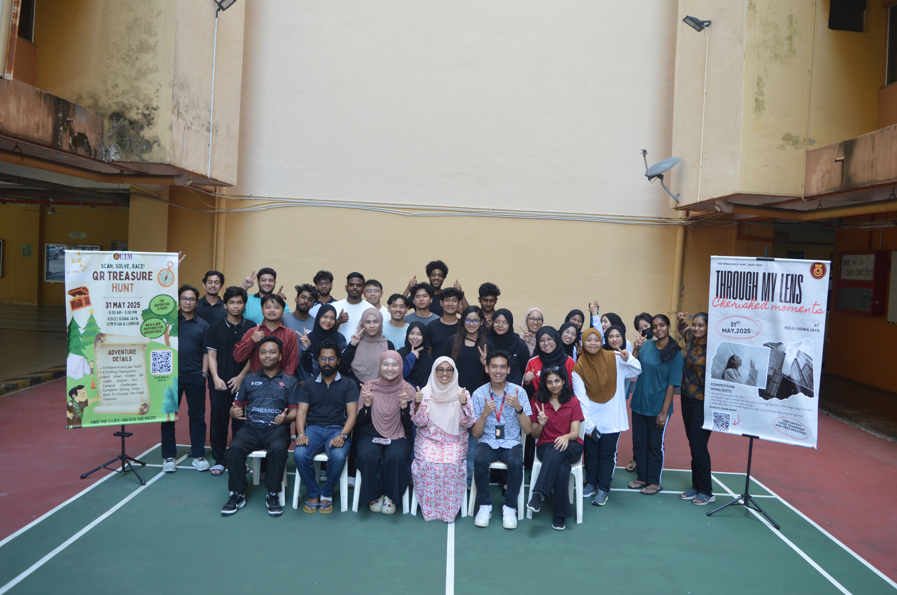

A Dynamic Digital Engagement Program by UTM Students
Date: 31 May 2025 | Time: 8:30 AM – 5:00 PM | Location: Kolej Siswa Jaya, UTM Kuala Lumpur
Organized under the Digital Media and Community course (UKQF2012), this event was a student-led initiative involving two major activities: a photography showcase titled "Through My Lens" and a mission-based QR Treasure Hunt. The program aimed to foster creativity, teamwork, and real-world digital skills.

I was responsible for Checkpoint 4 in the QR Treasure Hunt. My tasks included designing a photo-mission challenge, creating a Google Form for submission, generating and printing a QR code, and guiding participants through the checkpoint. I also calculated scores and submitted results to the team leader.



I received submissions from 6 groups (2–4 participants each) at my checkpoint. The checkpoint ran smoothly, and the event met its goals with successful participation and positive feedback. Adjustments on the event day were well managed by the team.

This experience taught me how to organize and execute an activity under pressure, communicate confidently despite being introverted, and manage responsibilities despite having ADHD. I learned teamwork, problem-solving, and how to adapt to real-world challenges in a diverse team environment.